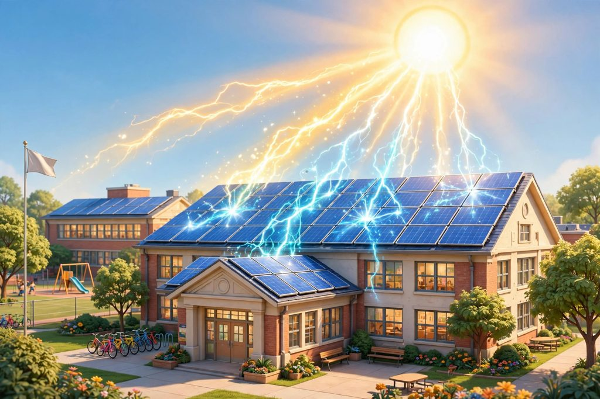

Unit 5 · Global Warming — Lesson 4: Listening & Writing · Grade 11 · Extra Class (B1–B2)
Full: who / which + verb → Reduced: V-ing
• Students who plant trees help the planet. → Students planting trees help the planet.
• The smoke rising from the factory pollutes the air.
Full: who / which + be + V-ed → Reduced: V-ed
• The panels which were installed on the roof save electricity. → The panels installed on the roof save electricity.
• The bins placed in every classroom are made from old plastic.
💡 We can reduce a relative clause only when the relative pronoun (who / which) is the subject of the clause.
🔑 Ask: does the noun do the action? → V-ing. Is the action done to the noun? → V-ed. Example from our story: posters designed by Linh's class · students joining the campaign.
Linh and Nam are students at Green Star High School. One afternoon, Linh, walking home from school, saw workers cutting down a big tree in the school garden. Worried about the environment, she started to notice other problems: lights left on in empty classrooms, plastic bottles thrown everywhere, and a school roof receiving strong sunlight all day but producing no clean energy. That evening, Linh wrote a proposal for a greener school and showed it to Nam. “Our school needs solar panels installed on the roof, recycling bins placed in every classroom, and more trees planted in the garden,” she said.
The next morning, Linh and Nam presented their proposal to the teachers in the school hall. Ms Lan, listening carefully, asked many questions about the cost. Nam showed her a chart: “The solar panels installed on the roof will cut our electricity bill, and the money saved in five years will pay for the panels.” Impressed, the teachers approved the proposal. Two weeks later, workers installed twelve solar panels on the school roof, and recycling bins made from old plastic were placed in every classroom.
In March, the school launched its Green Week campaign. Students joining the campaign planted fifty trees in the school garden and collected old batteries and plastic bottles. Posters designed by Linh's class were hung in every corridor. One month later, the school's electricity use had fallen by 20 per cent, and the garden looked green and beautiful. At the final ceremony, Ms Lan smiled: “Students learning to protect the planet are the best lesson of all.” Green Star High School had become a truly greener school.
PART 1 — Complete the form: GREEN SCHOOL CAMPAIGN — SUNSHINE HIGH SCHOOL
PART 2 — True or False?

Useful language: Our proposal is called… · At our school, we have problems such as… · We suggest installing solar panels / planting more trees / placing recycling bins… · The panels installed on the roof will… · Students joining the campaign will… · This will help reduce our carbon footprint. · We hope our school will become…
Good morning, everyone. Our proposal is called A Greener Green Star. At our school, lights are often left on in empty classrooms, and too many plastic bottles are thrown away. We suggest installing solar panels on the school roof and placing recycling bins in every classroom. The panels installed on the roof will cut our electricity bill. Students joining our Green Week will plant fifty trees in the garden. This will help reduce our carbon footprint and make our school greener. Thank you!
Proposal frame:
📌 Title: A Proposal for …
🎯 Purpose: This proposal suggests … to make our school greener / to reduce…
🌱 Activities: – Students joining the campaign will… · – Solar panels installed on… will… · – Bins placed in… will…
✅ Conclusion: I hope this campaign will…
Sentence starters: Our school is facing problems such as… · We suggest… · This will help… · As a result,…
Useful language: global warming · carbon dioxide · fossil fuels · renewable energy · carbon footprint · reduce emissions · save electricity
A Proposal for a Green Week Campaign
Purpose: This proposal suggests a Green Week campaign to make our school greener and to reduce our carbon footprint. Our school uses too much electricity, and plastic bottles thrown away every day pollute the school garden.
Activities: The campaign will take place in March. Students joining the campaign will plant fifty trees in the school garden and collect old batteries. Recycling bins placed in every classroom will help students sort rubbish correctly. Posters designed by our class will be hung in every corridor to remind everyone to save electricity and water.
Conclusion: I hope this campaign will make our school a cleaner and greener place for everyone.
Take a photo/screenshot of your report card and send it to your teacher!
| Part | Score |
|---|---|
| Warmer game (Lesson 3) | – |
| Vocabulary — Matching | – |
| Vocabulary — Gap-fill | – |
| Grammar check | – |
| Video check — Order the events | – |
| Video check — True / False | – |
| Reading | – |
| Listening — Form completion | – |
| Listening — True / False | – |
| Homework A — Vocabulary | – |
| Homework B — Reduced relative clauses | – |
| Homework C — The story | – |